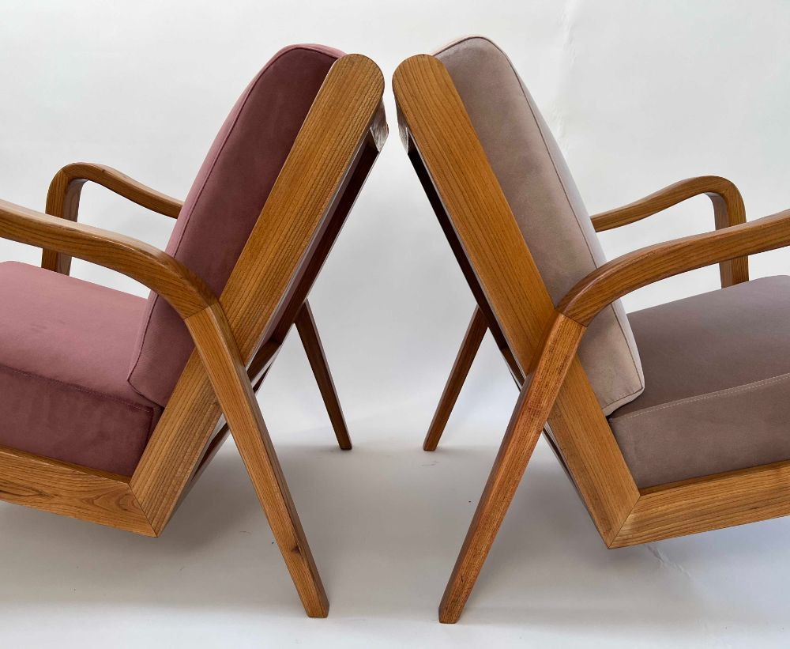
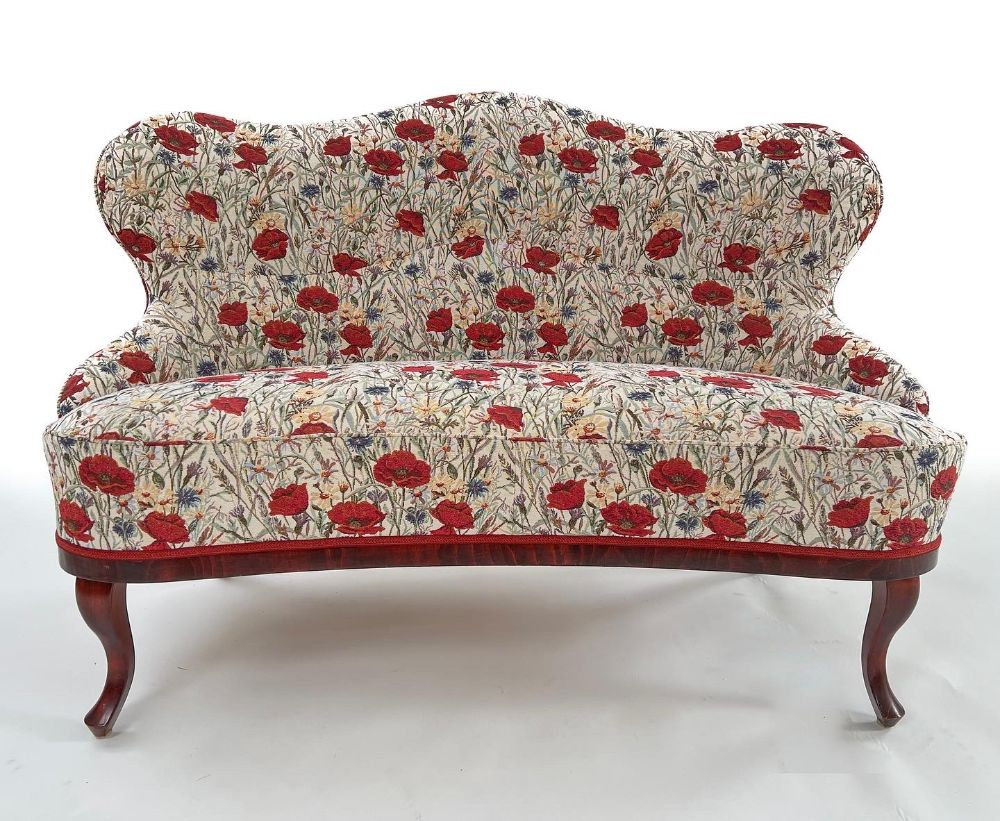

<section class="front_page">

    <div class="glide">
        <div class="glide__track" data-glide-el="track">
		  <ul class="glide__slides">
			<li class="glide__slide"></li>
			<li class="glide__slide"></li>
			<li class="glide__slide"></li>
		  </ul>
		</div>

		<script src="/glide.min.js"></script>

		<script>
		  new Glide('.glide', {
			autoplay: 2000,
			hoverpause: false,
			type: 'carousel'
		  }).mount()
		</script>
	</div>	

</section>